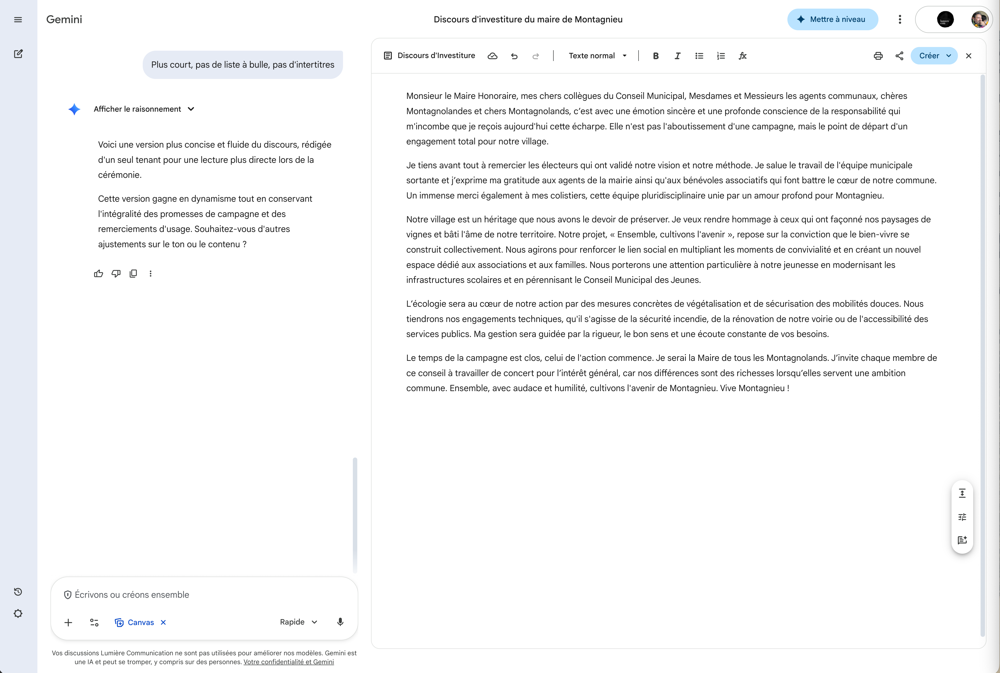

Canvas
Canvas est un espace de travail collaboratif qui transforme Gemini en véritable éditeur de documents. Au lieu de simplement recevoir une réponse dans le chat, Canvas ouvre un éditeur de texte à côté de la conversation : vous pouvez modifier le contenu directement, demander des ajustements à Gemini, et peaufiner votre document dans une interface proche d'un traitement de texte.
Point de vigilance : activer le mode Canvas
Le mode Canvas ne s'active pas automatiquement. Deux possibilités :
- Dès le départ : quand vous formulez une demande de rédaction, sélectionnez le mode Canvas dans les outils avant d'envoyer votre prompt. Canvas s'ouvrira directement.
- En cours de discussion : si vous êtes déjà dans une conversation classique, demandez simplement à Gemini « Active le mode Canvas » ou « Ouvre Canvas » dans le chat. Gemini basculera alors vers l'interface Canvas.
Cliquez sur les pastilles orange pour découvrir chaque fonctionnalité

Cliquez sur une pastille pour en savoir plus